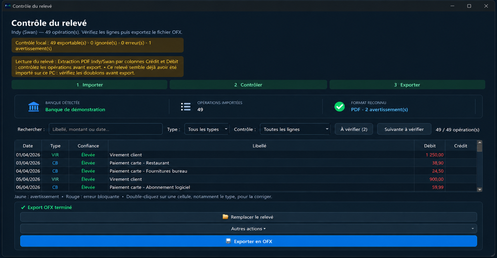

Importez vos relevés
PDF, PDF scanné, CSV, Excel, QIF, TXT ou OFX.
ComptaBridge transforme vos relevés bancaires en fichiers OFX, directement sur votre ordinateur.
Ouverture prévue en novembre
Lancement prévu ce mois-ci.
Nous allons ouvrir une version bêta à un premier groupe d’utilisateurs. Testez ComptaBridge sur vos propres relevés et aidez-nous à préparer une version commerciale encore plus fiable.
Le formulaire s’ouvre dans un nouvel onglet. Aucune donnée bancaire ne vous sera demandée.ComptaBridge transforme un relevé bancaire difficile à exploiter en un fichier OFX propre, tout en vous laissant vérifier chaque opération avant de l’envoyer dans votre logiciel comptable.
PDF, PDF scanné, CSV, Excel, QIF, TXT ou OFX.
Dates, libellés, débits, crédits et soldes sont vérifiés avant export.
Un fichier structuré, prêt à être importé dans votre logiciel comptable.

Le traitement des documents et la génération OFX sont locaux. Les services en ligne servent uniquement aux comptes, aux licences et aux mises à jour.
Le logiciel continue d’être amélioré. Vos relevés restent traités localement sur votre ordinateur et ne sont pas envoyés au service ComptaBridge.
Merci pour votre confiance — rendez-vous en novembre.